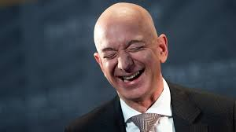
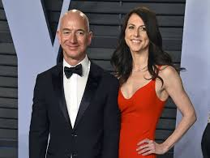

 Jeff Bezos is de rijkste mens ter wereld. Met een geschat vermogen van 182,2 miljard dollar is de CEO van Amazon de rijkste man ter wereld. Bezos heeft zijn positie als rijkste mens ter wereld zelfs na zijn scheiding van MacKenzie Bezos kunnen behouden. Zij hield een aandeel van 4% in Amazon ter waarde van 35,7 miljard dollar (32 miljard euro), waarmee ze de op twee na rijkste vrouw ter wereld is. Het jaarsalaris van Bezos bedraagt slechts 81.840 dollar (ruim 73.000 euro), maar zijn meeste rijkdom komt uit zijn aandelen Amazon. De rijkste man ter wereld verdient 2.489 dollar per seconde (2.228 euro) – meer dan twee keer zoveel als het gemiddelde Amerikaanse weeksalaris volgens berekeningen van Business Insider.
 Volgens de Wall Street Journal kocht Bezos de villa op een domein van 36.000 vierkante meter van de zakenman David Geffen, met wie hij bevriend is. Die had het eigendom op zijn beurt in de jaren negentig voor 47,5 miljoen dollar op de kop getikt, aldus nog de krant. Het pand werd oorspronkelijk in de jaren 1930 gebouwd voor filmmagnaat Jack Warner, van Warner Bros Studios.
165 miljoen dollar is het meeste dat ooit betaald werd voor een woning voor één familie in de regio LA, aldus de Wall Street Journal.
Volgens een artikel in het archief van Architectural Digest is het huis ruim 1.200 vierkante meter groot en omvat het domein daarnaast ruime terrassen en tuinen, twee gastverblijven, drie serres, een tennisveld, zwembad, golfterrein en motorbaan met garage en tankstation. Naar verluidt bevat het huis de houten vloer waarop Napoleon zijn Joséphine ten huwelijk vroeg.
Volgens de Wall Street Journal kocht Bezos de villa op een domein van 36.000 vierkante meter van de zakenman David Geffen, met wie hij bevriend is. Die had het eigendom op zijn beurt in de jaren negentig voor 47,5 miljoen dollar op de kop getikt, aldus nog de krant. Het pand werd oorspronkelijk in de jaren 1930 gebouwd voor filmmagnaat Jack Warner, van Warner Bros Studios.
165 miljoen dollar is het meeste dat ooit betaald werd voor een woning voor één familie in de regio LA, aldus de Wall Street Journal.
Volgens een artikel in het archief van Architectural Digest is het huis ruim 1.200 vierkante meter groot en omvat het domein daarnaast ruime terrassen en tuinen, twee gastverblijven, drie serres, een tennisveld, zwembad, golfterrein en motorbaan met garage en tankstation. Naar verluidt bevat het huis de houten vloer waarop Napoleon zijn Joséphine ten huwelijk vroeg.
MacKenzie Scott is met een vermogen van 68 miljard dollar, omgerekend zo’n 57 miljard euro, de rijkste vrouw ter wereld. De filantrope en succesvol auteur is de ex-vrouw van Amazon-oprichter Jeff Bezos, de rijkste man ter wereld.MacKenzie Scott is met een vermogen van 68 miljard dollar, omgerekend zo’n 57 miljard euro, de rijkste vrouw ter wereld. De filantrope en succesvol auteur is de ex-vrouw van Amazon-oprichter Jeff Bezos, de rijkste man ter wereld. Scott is volgens de Bloomberg Billionaire Index Françoise Bettencourt Meyers, een erfgename van L’Oreal, voorbijgestreefd. Bettencourt Meyers heeft een aandeel van 33 procent in de cosmeticafabrikant en een vermogen van 66,8 miljard dollar, omgerekend ruim 56 miljard euro. Scott en Bezos scheidden in 2019, waarbij Scott een aandelenpakket verkreeg met een geschatte waarde van 38 miljard dollar. De waarde van haar belang in Amazon is sindsdien alleen maar gestegen. In juli schreef Scott dat ze het afgelopen jaar 1,7 miljard dollar aan verschillende goede doelen heeft geschonken. Het zou gaan om doelen die opkomen voor LHBTQ-rechten, rassengelijkheid, volksgezondheid en het klimaat. Scott wil het grootste deel van haar vermogen doneren aan goede doelen Business Insider becijferde eerder al dat Scott tegen het einde van de week waarin ze haar blogpost schreef, dat bedrag al terug had verdiend. Door de stijgende beurskoers van Amazon maakte ze haar verlies in vermogen direct weer goed. In 2019 ondertekende Scott het Giving Pledge-initiatief. De ondertekenaars, waaronder Microsoft-oprichter Bill Gates en Facebook-topman Mark Zuckerberg, beloven het grootste deel van hun rijkdom uiteindelijk aan een goed doel te schenken. Scott is de rijkste vrouw op de lijst van Bloomberg en nummer 12 op de volledige rangschikking, achter techmiljardairs als Gates, Zuckerberg en Tesla-oprichter Elon Musk. De 16 rijkste Amerikanen in de Bloomberg Billionaires Index en Forbes Billionaires List zijn samen meer dan 1 biljoen dollar waard. De top bestaat vooral uit techondernemers, maar in de hoogste regionen komen ook andere bekende figuren voor, zoals leden van de machtige Koch- en Walton-families.